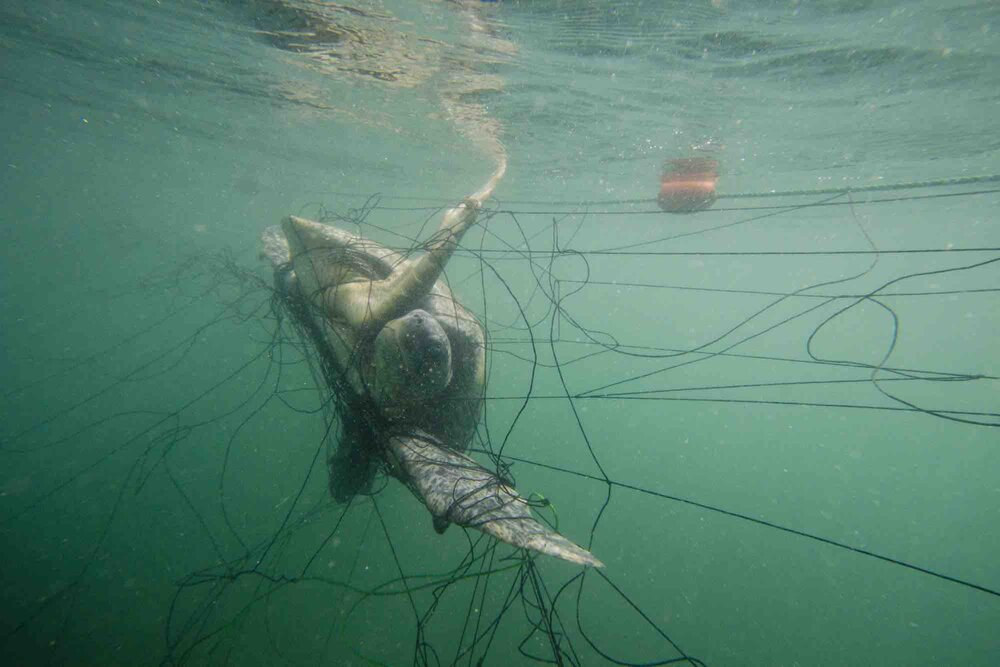

|  | It’s estimated that the fishing industry contributes to the death of thousands to tens of thousands of sea turtles each year. Turtles that become trapped in longlines, gill nets and trawls are thrown away as bycatch. And those that manage to avoid fishing nets are impacted by the disruption to their food supply and habitat. |
(Why Are Sea Turtles Endangered? 5 Major Threats, retrieved from https://www.seaturtlestatus.org/threats-to-turtles) |
|
| How can this be solved? | This can be solved by educating Fishermen about this threat and using a standard to use only bio degreadable Fishing nets. Click here to visit the Conservation Organization webpage |

|
Every year, sea turtle habitats are destroyed because of shrinking coastlines. Wherever there is boat vessel traffic, whenever a new hotel or high-rise is built up along the shore, and wherever there is sea floor dredging and beach erosion sea turtle food supplies and nesting areas take a major hit. |
(Why Are Sea Turtles Endangered? 5 Major Threats, retrieved from https://www.seaturtlestatus.org/threats-to-turtles) |
|
| How can this be solved? | This is solved by imposing rules that prevent private organizations from excessively developing building in the coastal areas. Click here to visit the Conservation Organization webpage |

|
Marine pollution can harm sea turtles in many ways. Plastic pollution, discarded fishing gear, petroleum by-products, and other debris injure sea turtles through ingestion and entanglement. Ocean pollution can also weaken the turtles’ immune systems, and disrupt nesting behavior and hatchling orientation. |
(Why Are Sea Turtles Endangered? 5 Major Threats, retrieved from https://www.seaturtlestatus.org/threats-to-turtles) |
|
| How can this be solved? | This is solved by carrying out Ocean Clean up projects. Enforcing rules and regulations to prevent people from dumping garbage to the ocean. Click here to visit the Conservation Organization webpage |

|
Throughout the world, turtles are killed and traded on the global market as exotic food, oil, leather, and jewelry. Over the past 100 years, millions of hawkbill turtles alone have been killed just for the price of their shells. And even though today the global trade of luxury and craft items has reduced thanks to conservation efforts, it still remains an ongoing threat to turtles in parts of Africa, Asia and the Americas. |
(Why Are Sea Turtles Endangered? 5 Major Threats, retrieved from https://www.seaturtlestatus.org/threats-to-turtles) |
|
| How can this be solved? | Eforcing rules and punishing individuals who hunt turtles. Click here to visit the Conservation Organization webpage |
Here's a link to the Kosgoda Hatchery
Here's a link to the Bentota Hatchery
Thank you for your Support. | ||
|
Contact No :076-286-0204 Email : Harindu@gmail.com Address :17B station Lane, Ahangan Mawatha, Unawatuna Follow us on Social Media |
||